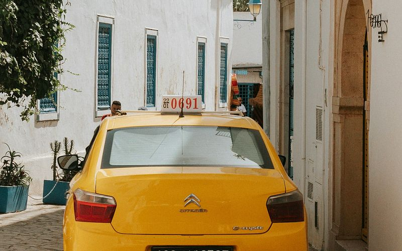
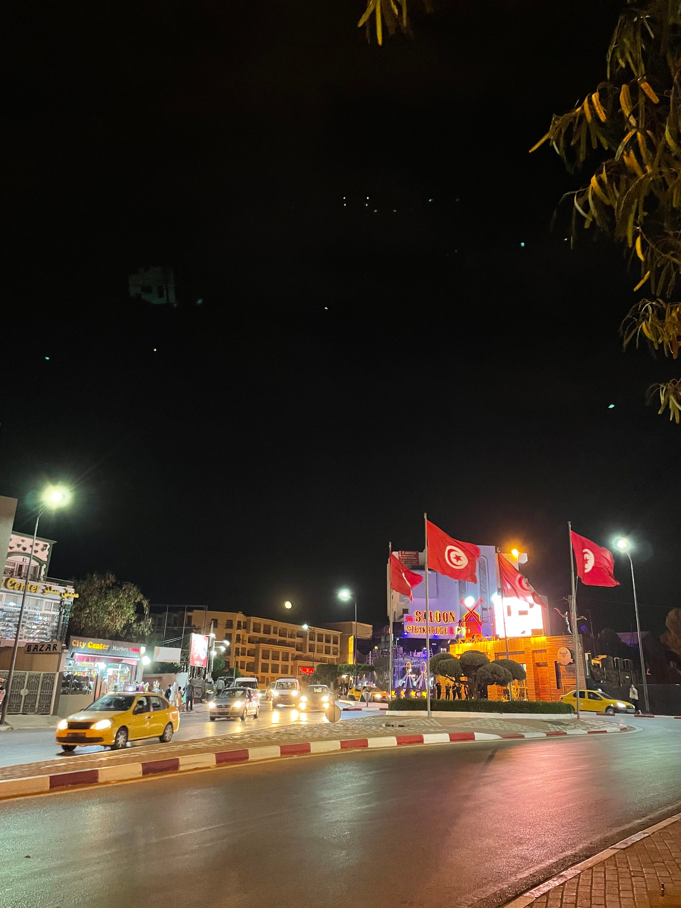
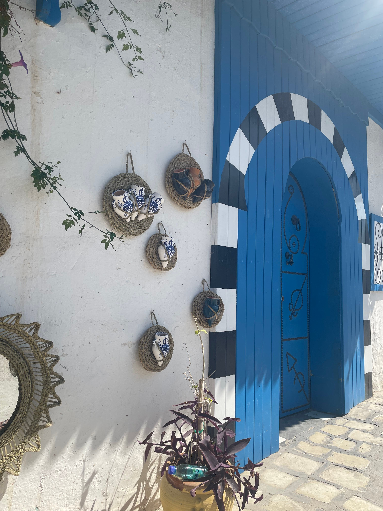

Taxi
Taxis are widely used for shorter trips within cities.
They're especially useful when traveling with luggage or visiting places that are difficult to reach by public transport.
Taxis are widely used for shorter trips within cities.
They're especially useful when traveling with luggage or visiting places that are difficult to reach by public transport.

Louages are shared taxis commonly used for intercity travel in Tunisia.
They usually operate from designated stations and often depart once enough passengers have boarded.

If you want to discover Tunisia at your own pace you can rent a car.
It's especially useful for road trips, smaller towns, and destinations that are harder to reach using public transport.
Make sure to check license requirements, insurance, local driving rules, and rental conditions before booking.
